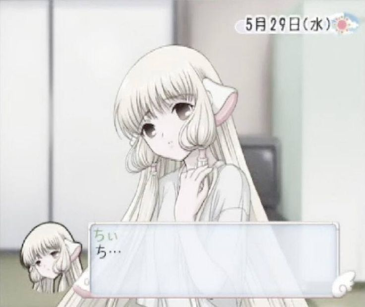
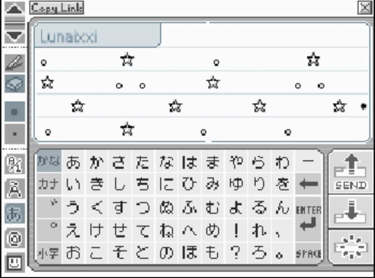
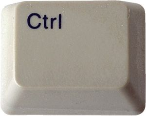
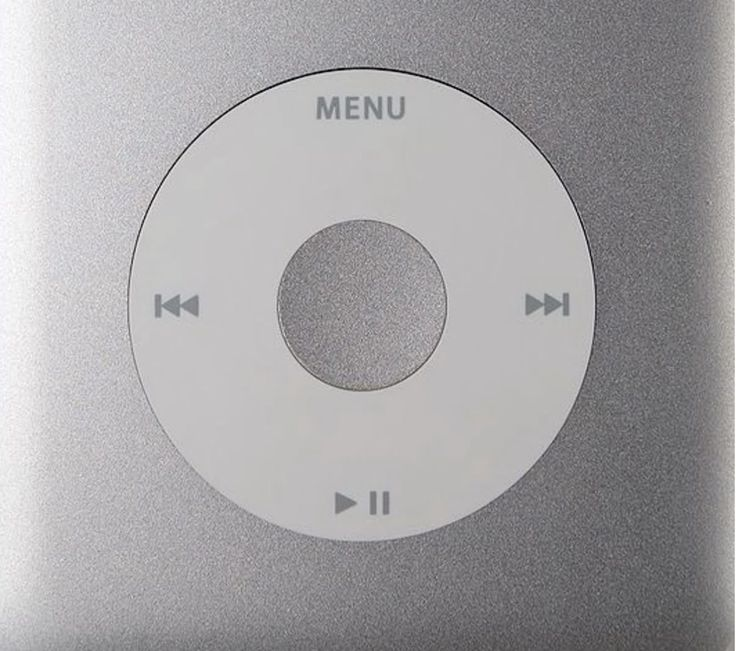
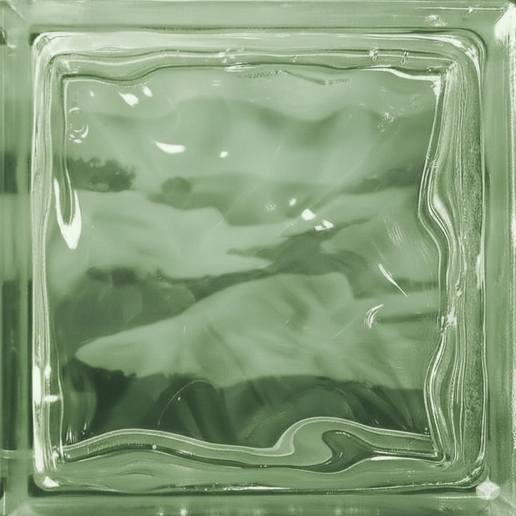
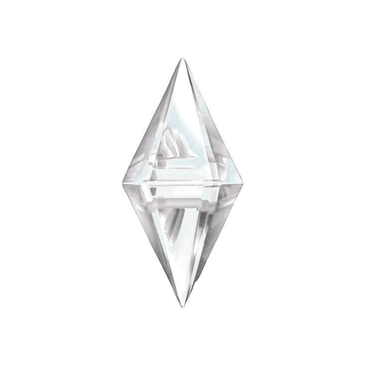
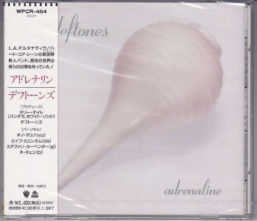
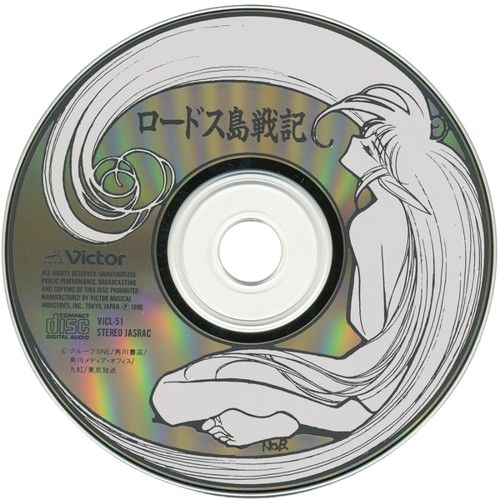
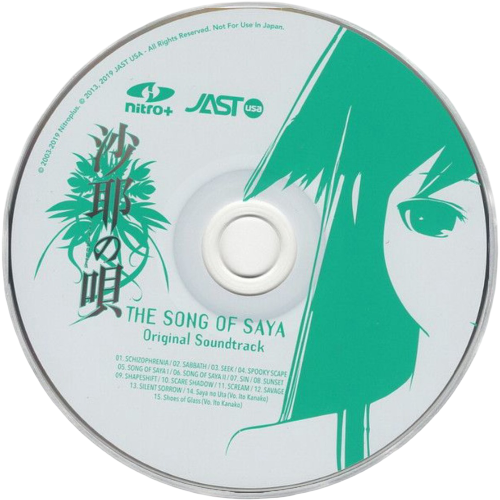

The lotus
ㅤ ㅤ ㅤ ㅤ
is a symbol of purity and rebirth. Rising gracefully from muddy waters, its delicate petals bloom in the sunlight, untouched by the murky depths below. Revered in many cultures, the lotus reminds us that beauty and strength can emerge even from the most challenging conditions.


Environment
Soft light, calm textures, slow visual rhythm.
System
Inspired by Windows 7 Aero & iOS 4 era.
State
Static · Silent · Timeless








In the heart of the Netherlands lies Giethoorn, a tranquil village where time moves with the gentle flow of its canals. Known as the "Dutch Venice," this car-free oasis is a tapestry of wooden bridges, thatched-roof cottages, and whispering reeds. Life here unfolds at the pace of a punt gliding through still waters.

Disks
A disk, whether a classic hard disk drive (HDD) or a modern solid-state drive (SSD), is the primary long-term storage device in a computer.

